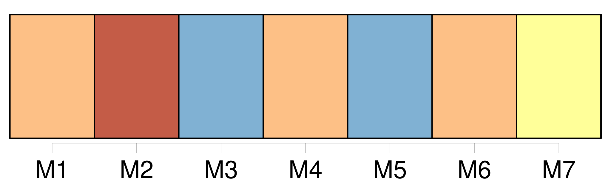
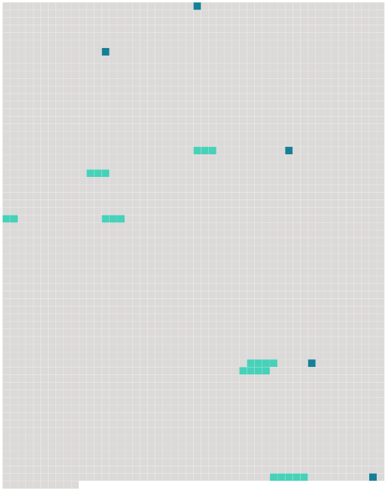

Longueur nb maillons : 12 mentions |
  |
dit la mère aveugle en s'asseyant sur le bord de son lit, appuyée sur sa fille, qui est donc là près de [nous] ?? [19 phrases]
— Nullement, répondit celle -ci ; mais elle a toute sa mémoire ; et, d'ailleurs, [notre] vie compte si peu d'événements, qu'il est impossible qu'elle ne te reconnaisse pas tout à l'heure. [25 phrases]
Il semblait que [ces deux femmes] craignissent de s'éclairer mutuellement sur la lassitude qu' [elles] éprouvaient d'être ainsi attachées l'une à l'autre, un être moribond et un être vivant : l'un effrayé des mouvements de celui qui pouvait à chaque instant lui enlever son dernier souffle et l'autre épouvanté de cette tombe où il craignait d'être entraîné à la suite d'un cadavre. [1 phrases] Mais, malgré cela, Laurence sentit que l'effroi et l'ennui la gagnaient entre [ces deux victimes] [6 phrases] Tandis que le premier enthousiasme de l'admiration naïve s'affaiblissait chez l'actrice, tout aussi naïvement et en dépit d' [elles -mêmes] , une modification d'idées s'opérait en sens inverse chez [les deux bourgeoises] [32 phrases] chez [les dames D …] … ? comment pouvait -elle [les] connaître?? [1 phrases] Le secrétaire de la mairie, qui faisait sa partie de billard au café situé justement en face de la maison [des dames D …] … [26 phrases] Elle fut si aimable et si jolie dans ce badinage, que le bon maire en tomba amoureux comme un fou, voulut lui baiser la main, et ne se retira que lorsque [madame D … et Pauline] lui eurent promis de le faire dîner chez [elles] ce même jour avec la belle actrice de la capitale. |
 |
La ressource peut être téléchargée sur la page Ortolang
Si vous avez des questions ou vous voyez des erreurs, merci d'envoyer un mail à silvia.federzoni89@gmail.com
Site développé par S. Federzoni (contact)